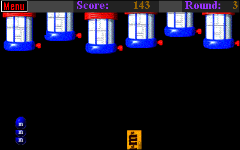
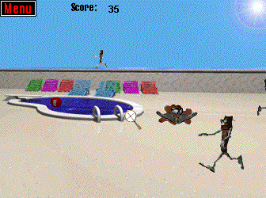
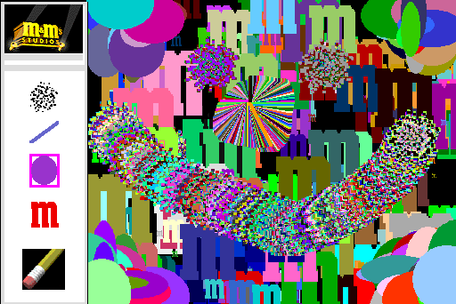

M&M's Downloadable Games/Widgets

Bag 'Em

Note: This is a 16-bit program and requires special programs to run on 64-bit Windows, such as otvdm.
DOWNLOAD
 .exe file zipped (Windows) (619 KB)
.exe file zipped (Windows) (619 KB)
.hqx file (Mac OS) (397 KB)
Melt 'Em

Note: This is a 16-bit program and requires special programs to run on 64-bit Windows, such as otvdm.
DOWNLOAD
.exe file zipped (Windows) (712 KB)
.hqx file (Mac OS) (525 KB)
Paint 'Em

Note: This is a 16-bit program and requires special programs to run on 64-bit Windows, such as otvdm.
DOWNLOAD
.exe file zipped (Windows) (612 KB)
.hqx file (Mac OS) (383 KB)
M&M's Widget (m-ms.com.tw)
A widget of Red that you can interact with. Comes with info on the character, and a calendar schedule feature accessible by right clicking.
DOWNLOAD
.exe file zipped (614 KB)